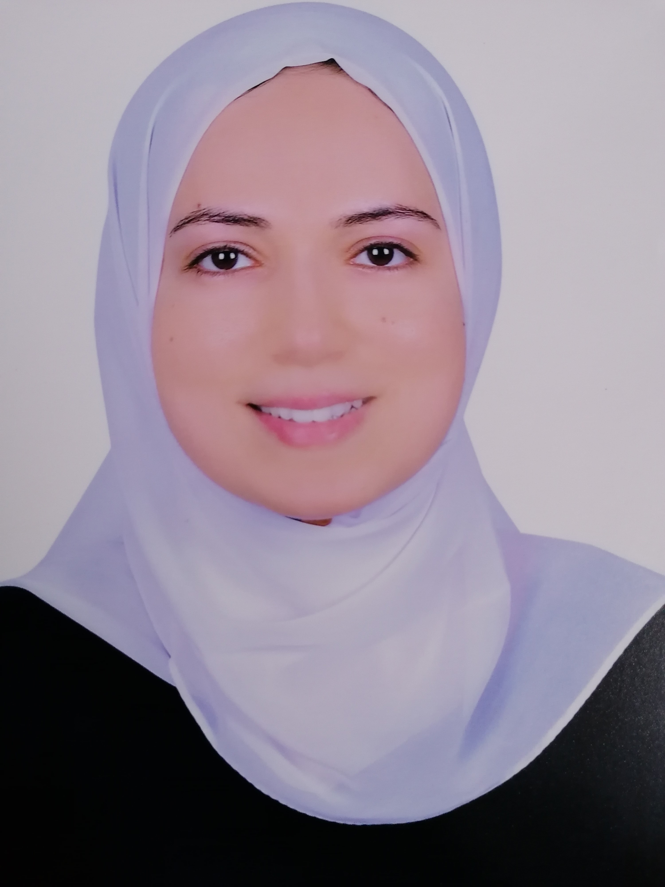

About me
Home About

Shaimaa Fayez, Ph.D.
Lecturer at Department of Pharmacognosy, Faculty of Pharmacy, Ain-Shams University
- Shaimaa Fayez studied pharmaceutical sciences at the Faculty of Pharmacy Ain-Shams University and obtained her M.Sc. degree in the field of phytochemistry from the same institute in February 2015. She got her PhD degree (funded by DAAD fellowship) from the Institute of Organic Chemistry, University of Würzburg, Germany in the field of chemistry of natural products in November 2019.
- Since December 2019, she is a lecturer at the Department of Pharmacognosy and Phytochemistry, Faculty of Pharmacy, Ain-Shams University. Her major research interests include the discovery of new molecular therapeutic entities from natural sources like terrestrial plants and marine organisms with particular focus on their isolation and structural elucidation using the different spectroscopic techniques.